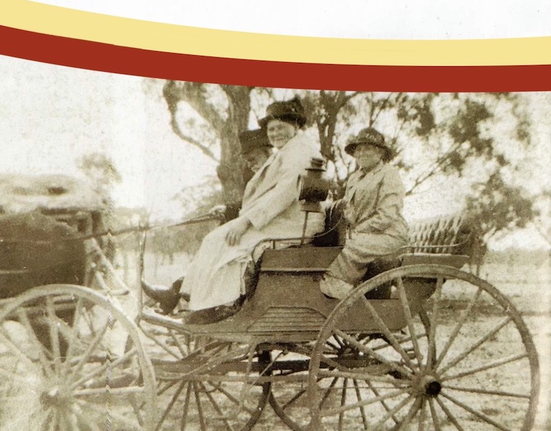
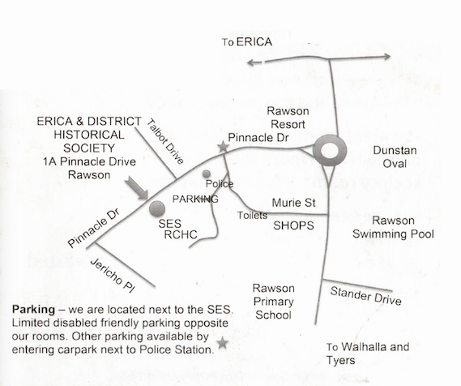

Erica & District Historical Society Inc.
The Purposes/ Aims of the Association are -
To promote within the general community a knowledge of, and enthusiasm for, the historical, cultural and environmental heritage of Erica; including, but not limited to the towns and settlements of her districts; namely Moondarra, Rawson, Parkers Corner, Coopers Creek, Jubilee, Jacobs Creek, Caringal, Gould and Tyres Junction by :
- The collection and preservation of materials of historical interest related to the area; including oral histories.
- The provision of a library and archives collection.
- The dissemination of knowledge of Erica and her districts history through a newsletter, publications, excursions and by other means.
- The encouragement of the renovation, preservation and maintenance of historical sites and buildings.
Map of Erica and her districts


Sarah Robins & Pricilla Cole. Robins Family Collection


Bric a Brac @ Rawson
Open Wednesday 10 to 2pm and other times as advertised
